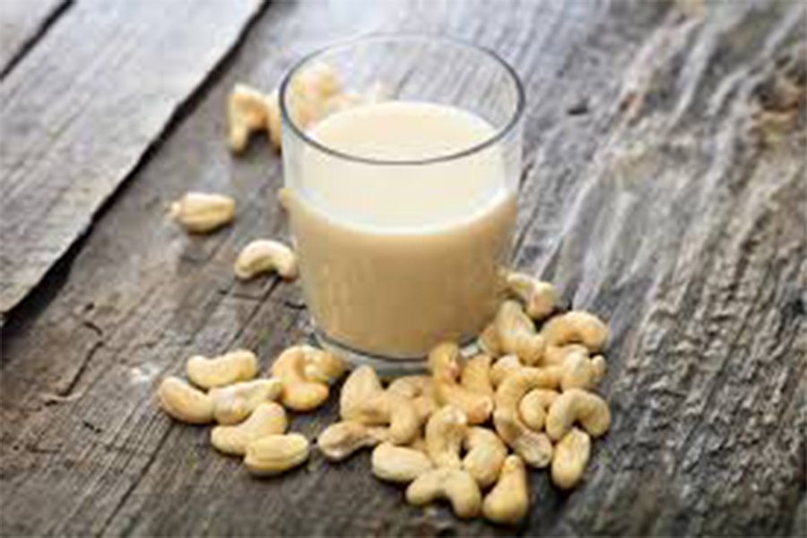

My Favorite Food
Chocolate Cashew Milk
a creamy and nutty cow's milk alternative

Ingredients
- cashews
- medjool dates
- water
- cocoa powder
- maca root powder
- cinnamon powder
- vanilla extract
- pink himalayan salt
Directions
- soak cashews
- unpit medjool dates
- place all ingredients in Vitamix
- blend
- enjoy!
For more information: Vanilla and Bean Recipe